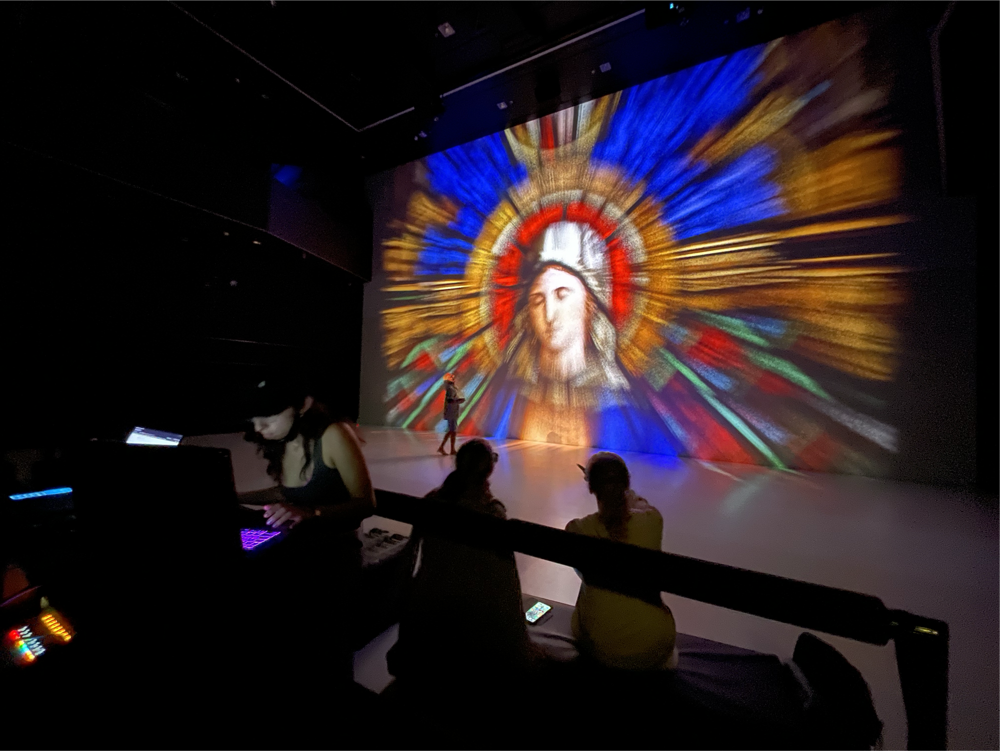
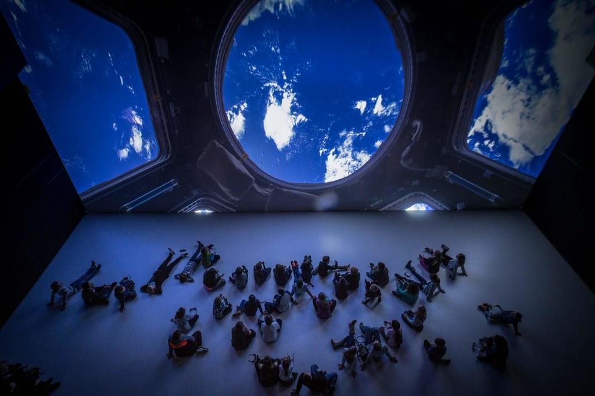
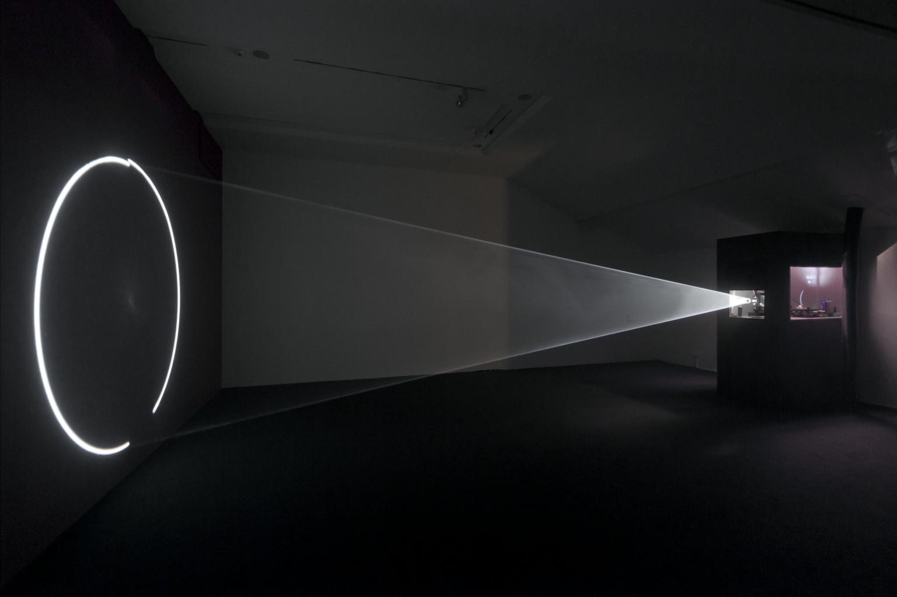

DOMSPACE
DOMSPACE is a 3D media installation that transforms photographs of the stained glass windows of Mariendom Linz into a layered stereoscopic animation, combined with music and dance.
The project was created in the context of the Anton Bruckner Year 2024 and the 100th anniversary of Mariendom Linz. It was developed for the Deep Space 8K environment at the Ars Electronica Center, which combines synchronized wall and floor projections with stereoscopic visualization requiring 3D glasses and precise spatial alignment.

As part of the project, Behiye Erdemir and Ozan Tezvaran were commissioned to convert 2D photographs of the stained glass windows into stereoscopic imagery. The main challenge was to create a sense of depth from flat images so that they could function within the spatial projection system.

To address this, a technique based on volumetric layering was developed in Blender. A digital model of the Deep Space 8K environment was recreated to serve as a spatial reference for the projections. Each image was divided into multiple layers and mapped onto separate planes positioned at varying depths within this three-dimensional setup. Volumetric fog was used to enhance spatial perception and continuity between layers. This process created the illusion of depth required for stereoscopic viewing.
The visual approach was inspired by Anthony McCall’s work Line Describing a Cone, particularly in its use of light, space, and volumetric form.



The final animation has a duration of approximately 20 minutes and was designed specifically for the Deep Space 8K environment, which features 16 × 9 meter projection surfaces on both wall and floor. Using multiple virtual cameras in Blender, stereoscopic image pairs were generated for both surfaces. Precise alignment and depth calibration were required to ensure a coherent visual experience across the two projection planes.
Reference video for the Blender workflow: Blender Ultimate Hologram Tutorial
Performance Video Recorded in Deep Space:
Screenings:
23. May 2025 19:00 – 19:45
29. Nov 2024 19:30 – 20:30
18. Dec 2024 19:30 – 20:30
Deep Space 8K - Ars Electronica Center
Credits:
Coordination: Annette Lopez Leal, dance artist
Partners: Pathfinder Collective: Behiye Erdemir, Ozan Tezvaran (media installation), Oscar Jockel (composer), Christina Wais-Wolf (concept), ÖAW/IHB, Ars Electronica
With the kind support of the Cultural Promotion of Upper Austria, the Sparkasse OÖ and the Mariendom Linz (Copyright of the provided photos: Mariendom Linz / Daniel Podosek 2023)